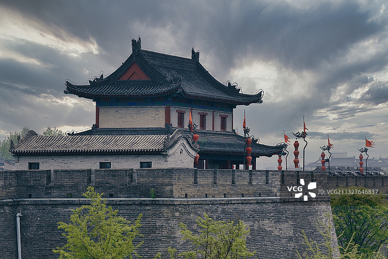
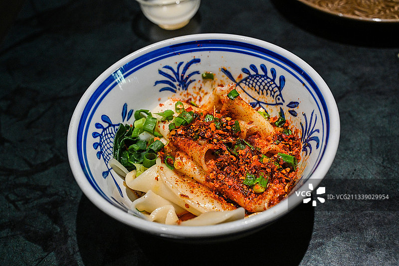
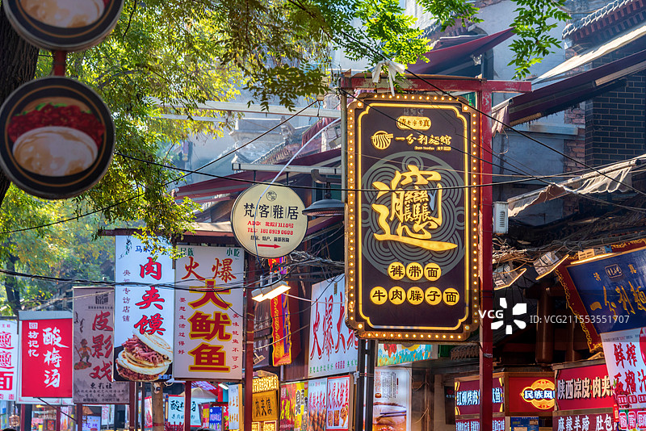
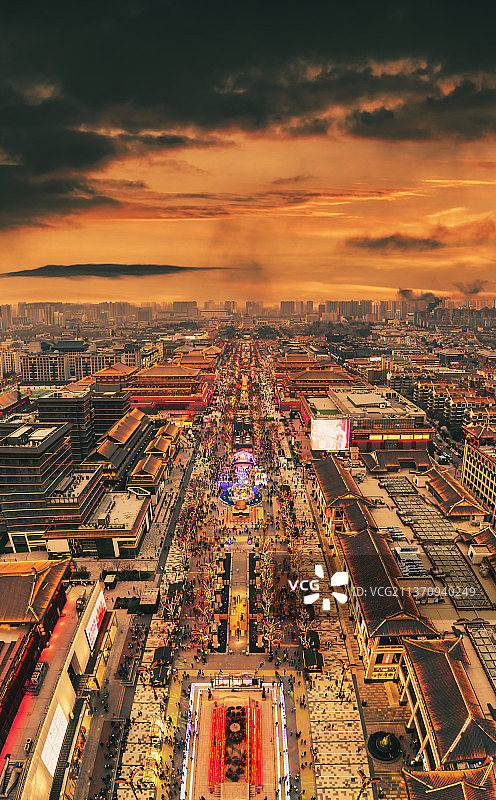
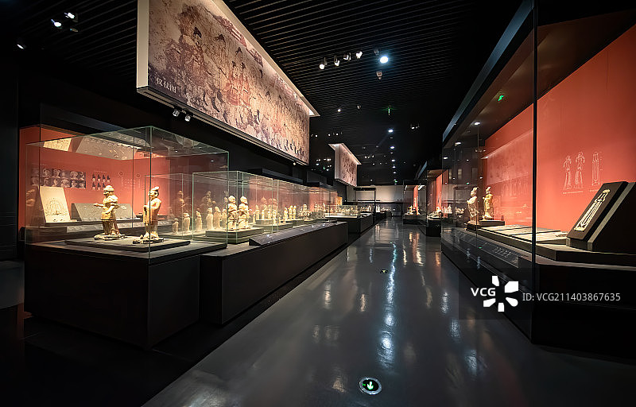
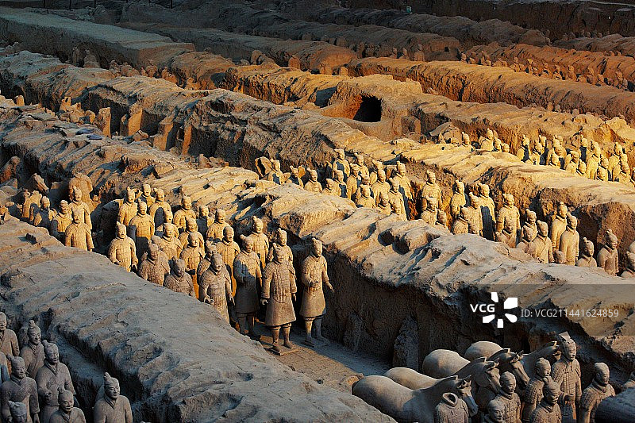

HISTORY
登钟鼓楼望千年城垣，穿回民街品市井烟火。兵马俑列阵震撼世界，陕历博珍宝诉说周秦汉唐。一日看尽长安，步步皆历史。


登钟鼓楼望千年城垣，穿回民街品市井烟火。兵马俑列阵震撼世界，陕历博珍宝诉说周秦汉唐。一日看尽长安，步步皆历史。

清晨登上古城墙骑行，午后走进兵马俑军阵。夜幕降临，大唐不夜城华灯璀璨。回民街美食与钟鼓楼夜色，构成最鲜活的西安记忆。
亲手掰碎馍块等待热汤浇下，腊汁肉夹于酥脆白吉馍中。一碗泡馍吃出老西安的慢节奏，一个肉夹馍咬下满口肉香。

宽如裤带的biangbiang面油泼香扑鼻，凉皮酸辣爽滑一扫暑气。biangbiang面里藏着关中豪迈，凉皮红油中映着夏日清凉。



世界第八大奇迹，感受秦帝国恢弘的地下军阵，探索两千年前的大一统文明。

品尝正宗西安美食，肉夹馍、羊肉泡馍、biangbiang面，感受市井烟火气。

中国现存规模最大、保存最完整的古代城垣，骑行城墙俯瞰古都风貌。

融合盛唐文化与现代灯光艺术，夜色中的长安盛景，一秒梦回大唐。
世界第八大奇迹，秦始皇陵的陪葬坑，展现秦帝国恢弘的地下军阵。探索两千年前的大一统文明，感受历史的震撼。
位于大雁塔脚下，全长2100米，以盛唐文化为背景，以唐风元素为主线。夜色中的长安盛景，一秒梦回大唐。

被誉为"古都明珠，华夏宝库"，馆藏文物170余万件，从史前文明到明清，完整展现陕西历史脉络。
位置：紧邻回民街入口，两个景点步行只需5分钟
最佳时间：傍晚登楼，看日落+夜景亮灯
游玩时长：每个楼约30-40分钟，合计1.5小时足够
